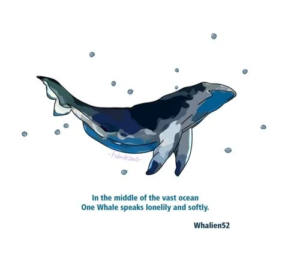

Zahra's Blog
Book Review: Sweet Bean Paste
Recently I read a book called Sweet Bean Paste by Durian Sukegawa completely fell in love with it. This is without a doubt one of the best books I’ve read in a while. Honestly, it’s a hard book to sell. Every time I try to convince someone to read it or even just explain what it’s about, I find myself selling it short. On the surface it’s about an ex-con named Sentaro who wants to be a writer but instead finds himself spending his days making dorayaki, which is type of Japanese pancake. He reluctantly employs Tokue, an elderly lady with disfigured hands, to help him. Although he doesn’t want to hire her for fear that she’ll scare away customers, he can’t resist her delicious sweet bean paste.
Without giving anything away, not that there is much to give away anyway, the story is a reminder to pause and truly experience the world around us. It highlights the beauty and meaning of all the “small” stories happening around us all the time. It’s a book that will stay with you for a long a time after you put it down.
“All experience adds up to a life lived as only you could. I feel sure the day will come when you can say: this is my life.”
| Month |
Books Read |
| August |
3 |
| September |
5 |
| October |
4 |
Zahra Al-Sultan
Posted: October 14, 2022
BTS' Whalien 52: The Loneliest Whale in the World Has a Friend

In 2015 the Korean band BTS released a song called Whalien 52. The song was inspired by the 52-hertz whale, believed to be the only whale on earth that communicates in a 52 hertz frequency. What this means is even if other whales can hear it, they can’t understand what it’s trying to say. Because of this, the whale was named the loneliest whale in the world. BTS used this as a metaphor for feeling lonely, misunderstood, and unable to communicate their feelings. There song explains that just like the whale, even though people may have been listening to them, they still did not understand them.
Recently though, some information for a 2015 documentary, The Loneliest Whale: The Search for 52 resurfaced where the sound of 2 separate 52 Hz calls were heard 30 miles away from each other. A couple of post about the possibility of another 52 hertz whale reignited the attention on the story and on the song. Although nothing has been confirmed since, people now have hope that the loneliest whale in the world might have a friend.
Zahra Al-Sultan
Posted: October 12, 2022